vLLM Ascend MoE Technical Guide
从 MoE 执行路径理解 EPLB
这份 HTML 不是 Markdown 原文的逐段搬运，而是把文章主线重新压缩成一条学习路径： MoE 如何把 token 路由到专家，EP 如何把专家分布到 NPU，负载不均衡为什么会变成尾延迟， 以及 vLLM Ascend 里的 EPLB 如何通过冗余专家、映射表、热度采集、策略计算和权重迁移来降低这种尾延迟。
1. MoE 与 EP：先把“专家在哪里”想清楚
MoE 可以把 Transformer FFN 层理解成一组可选择的子网络。Gate 为每个 token 选择少数几个 routed experts，shared experts 则通常对所有 token 都生效。这样做的收益是扩大模型容量； 代价是执行路径从普通矩阵乘法变成了“路由、通信、专家计算、聚合”的组合流程。
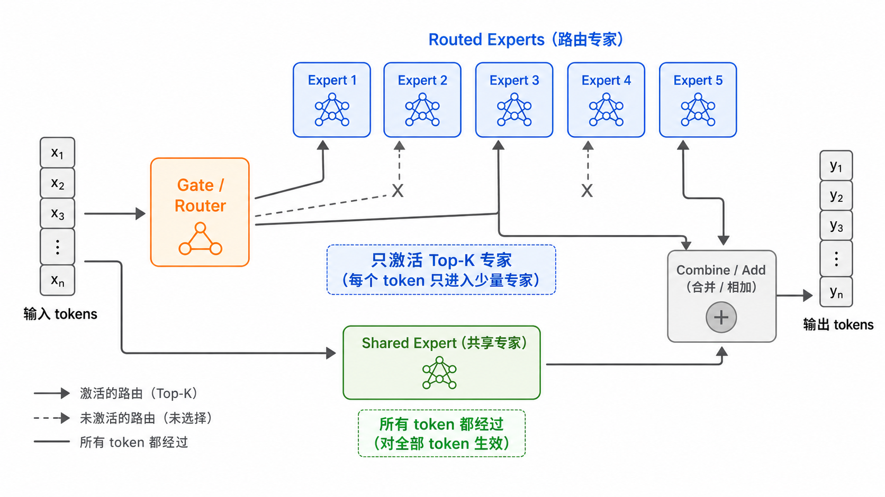
EP（Expert Parallelism）解决的是专家参数如何分布式部署。设 EP world size 为 P，
routed expert 总数为 E，没有冗余时每个 rank 理想持有 E/P 个专家。
当 token 被 gate 选中某个专家后，它必须被发送到该专家所在 rank，本地计算完成后再回到原 token 顺序。
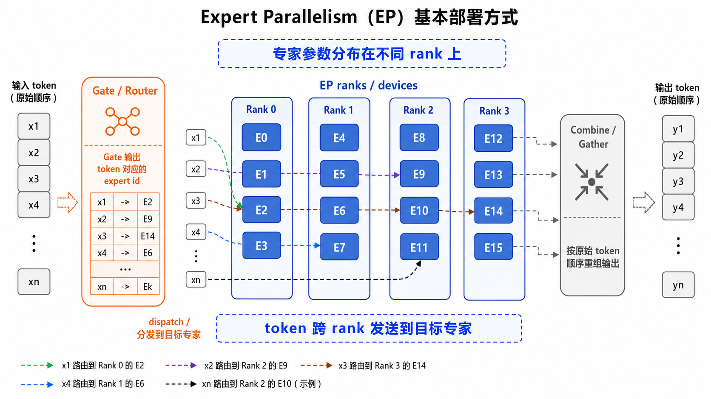
2. DeepSeek-V3.2 MoE 数据流：一条 token 副本的旅程
DeepSeek-V3.2 的 FFN/MoE 部分可按 DeepSeek-V3 系列的 routed experts + shared experts 结构理解。
关键配置包括 hidden_size=7168、moe_intermediate_size=2048、
n_routed_experts=256、n_shared_experts=1、
num_experts_per_tok=8、n_group=8、topk_group=4、
routed_scaling_factor=2.5。前 3 层使用 dense FFN，后续层进入 MoE FFN。
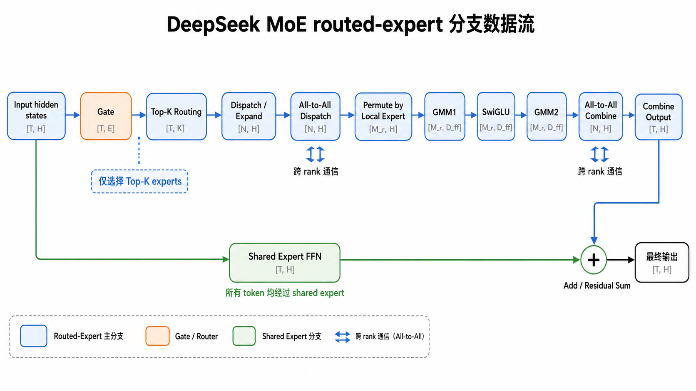
常用符号和典型规模
| 符号 | 含义 | A3 常见示例 | 为什么重要 |
|---|---|---|---|
P |
EP world size | 16 | 决定专家分布和 all-to-all 的 rank 数。 |
T |
单 rank 输入 token 数 | 64 | 决定本 rank 发起多少路由请求。 |
K |
每个 token 选择的 routed experts 数 | 8 | 单 rank routed token 副本数为 N=T×K=512。 |
H |
hidden size | 7168 | 决定 token hidden state 和通信 payload 大小。 |
I |
expert intermediate size | 2048 | 决定 expert FFN 的 GMM 计算规模。 |
关键 shape 摘要
| 阶段 | 输入/输出 | 典型形状 |
|---|---|---|
| Gate logits | X × W_g |
[64,7168] → [64,256] |
| Top-k routing | expert_ids、expert_weights |
[64,8] |
| Dispatch expand | token 副本 | [512,7168] |
| Local expert grouping | 按本地 expert 连续排列 | [M_r,7168]，均衡时 M_r≈512 |
| GMM 1 / SwiGLU / GMM 2 | 本地 expert FFN | [M_r,7168] → [M_r,4096] → [M_r,2048] → [M_r,7168] |
| Final output | shared 与 routed 聚合 | Y = Y_shared + 2.5 × Y_routed |
在 vLLM Ascend 中，这条逻辑路径可能被算子融合压缩：例如 npu_moe_distribute_dispatch_v2
会融合 dispatch、permute 和部分 all-to-all；A3 W8A8 decode 场景还可能使用
dispatch_gmm_combine_decode 把 dispatch、GMM、SwiGLU、combine 放入 fused kernel。
但无论融合到什么程度，概念上仍然是“路由到专家、专家计算、再聚合回来”。
3. 耗时模型：为什么负载不均衡会变成尾延迟
MoE 层的尾延迟主要由两块共同决定：本地 expert FFN 计算和跨 rank all-to-all 通信。 两者都会被专家热度长尾放大。这里的模型是解释性模型，不是硬件 kernel 的精确性能模型。
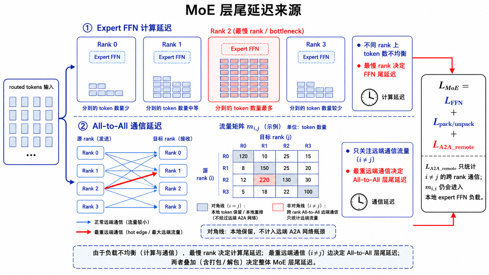
3.1 Expert FFN 计算延迟
设第 p 个 rank 实际处理的 routed token 副本数为 n_p，总副本数为
N=sum(n_p)。平均负载是 N/P，expert 侧负载不均衡比定义为：
所以最慢 rank 实际承担的 token 数可以写成 (N/P) × LIR_exp。MoE 需要等最慢 rank
完成，因而 FFN 延迟可近似拆成固定开销、主 GEMM 线性项和带宽/缓存/算子效率带来的非理想项：
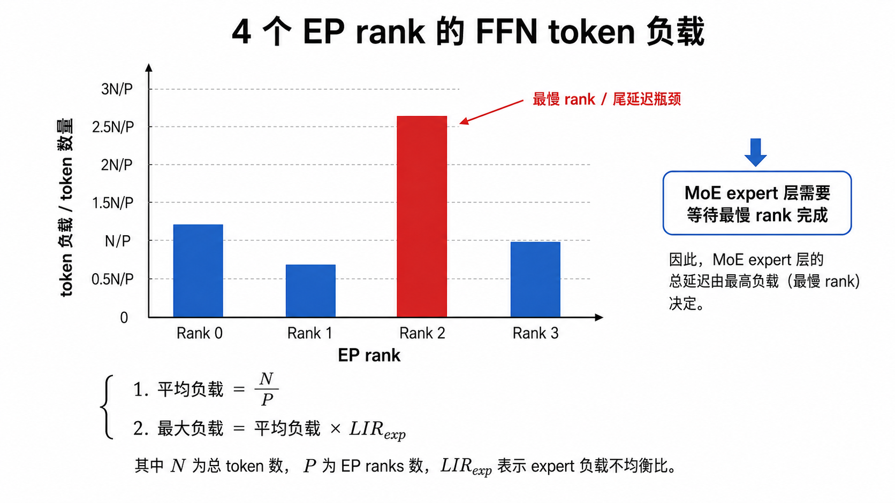
3.2 All-to-All 通信延迟
Dispatch 阶段可抽象为流量矩阵 m_i,j：源 rank i 发往目标 rank
j 的数据量。单条通信可近似为：
All-to-all 的整体等待由最慢通信方向主导。当源侧发送近似均匀，而目标侧接收由专家热度决定时，
最大 pair 流量可粗略看成 (N/P²) × LIR_exp，因此通信项为：
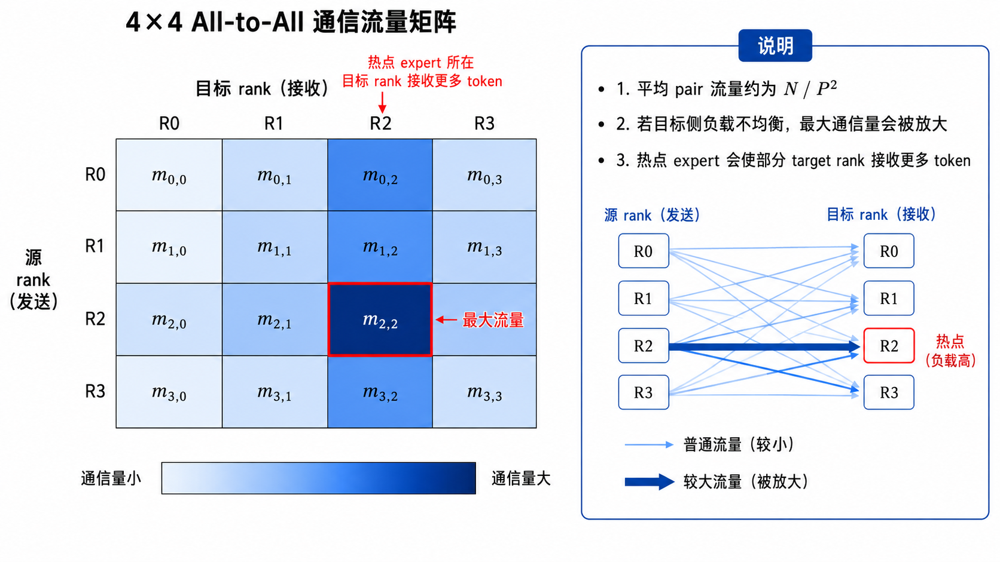
3.3 统一结论
将 FFN 与通信相加后，LIR_exp 同时出现在计算项和通信项里。EPLB 的优化目标因此非常清楚：
不一定直接减少 token 总数，而是让同一层中的 routed token 更均匀地落到不同 rank。
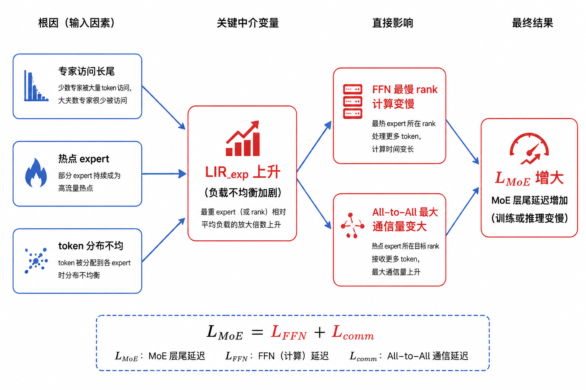
4. EPLB 与冗余专家：不改语义，只改执行映射
EPLB 的出发点是：真实请求中的专家访问通常是长尾分布，少数专家持续更热。如果没有冗余，一个 logical expert 只能由一个 physical expert 承担，单个热点专家无法拆分；如果有冗余副本，同一个 logical expert 的 token 可以被分发到多个 rank。
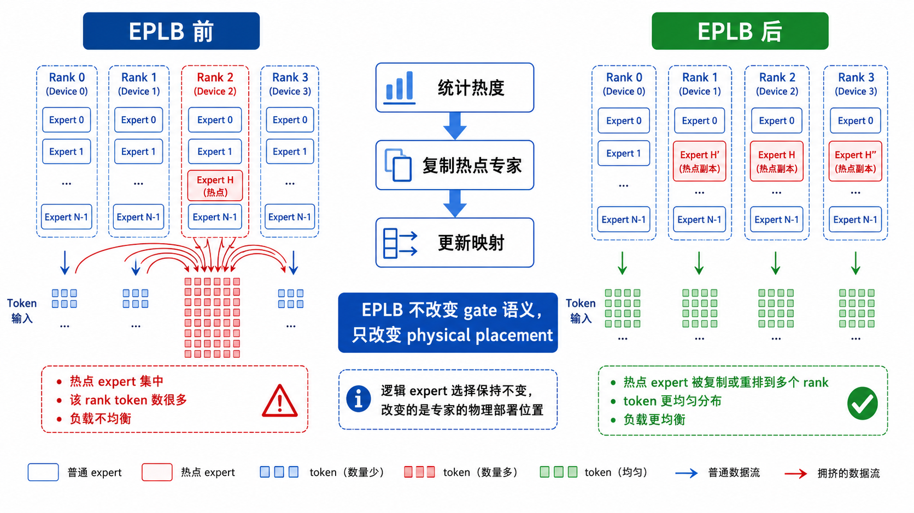
logical expert 与 physical expert
Gate 输出的是 logical expert id。运行时通过 log2phy 把 logical id 映射到一个 physical slot，
再通过 expert_map 找到该 physical slot 所在 rank。多个 physical slots 可以持有同一个
logical expert 的权重副本，这就是冗余专家。
E2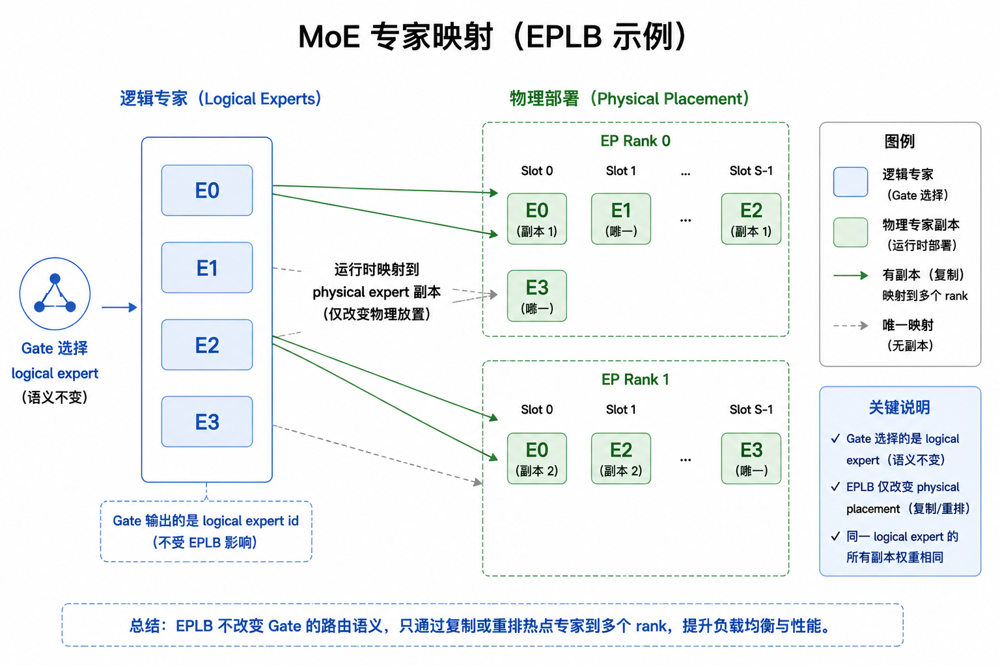
| 对象 | 它描述什么 | 新人容易误解的点 |
|---|---|---|
global_expert_map |
全局 placement：每个 EP rank 放了哪些 logical experts。 | 里面既可能有原始 expert，也可能有冗余副本。 |
expert_map |
本 rank 的 local expert slot 映射。 | 它服务于本地执行和 dispatch 判断，不是 gate 的输出。 |
log2phy |
logical expert 到 physical expert 的运行时映射。 | 它让 gate 语义与物理副本分离，是冗余专家能工作的关键。 |
5. vLLM Ascend 的 EPLB 工程闭环
当前实现不是简单地“把专家重新排一下”。完整链路包括初始化 placement、前向执行映射、 真实负载采集、策略计算、权重 D2D 迁移，以及最终切换运行时 map。
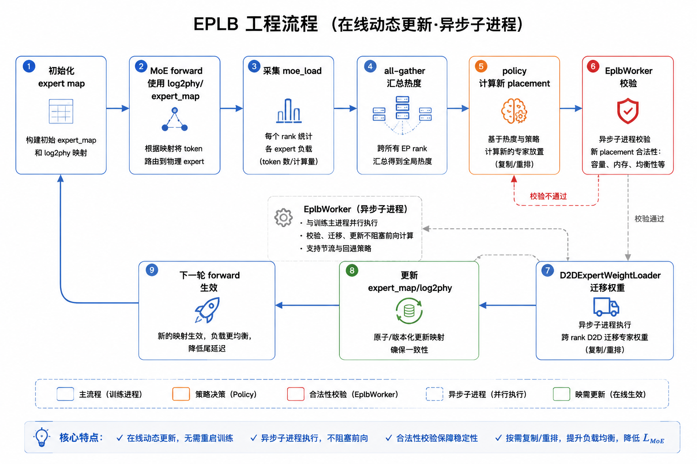
init_eplb_config 生成或加载初始 placement。AscendFusedMoE 累加本地 physical expert token 数。EplbUpdator 周期性 all-gather 各 rank 热度。EplbWorker 调 policy 得到新 placement。D2DExpertWeightLoader 搬权重并更新 map。三种使用模式
| 模式 | 行为 | 适用场景 |
|---|---|---|
| 动态模式 | 在线采集热度，周期性计算新 placement，并迁移权重。 | 专家热度随业务流量变化明显，需要持续调平。 |
| 录制模式 | 运行过程中得到较优 expert map，并写到 expert_map_record_path。 |
先用真实流量找部署，再把结果固化。 |
| 静态模式 | 从 expert_map_path 直接加载已有 placement。 |
希望避免在线重排和权重搬迁成本。 |
6. 三类 EPLB 策略：全局重排、局部修正、历史风险
代码通过 eplb_policy_type 选择策略。三类策略都围绕同一个目标：在不丢专家、
不把同一 logical expert 的副本放到同一 rank 的前提下，降低 rank 负载峰值。
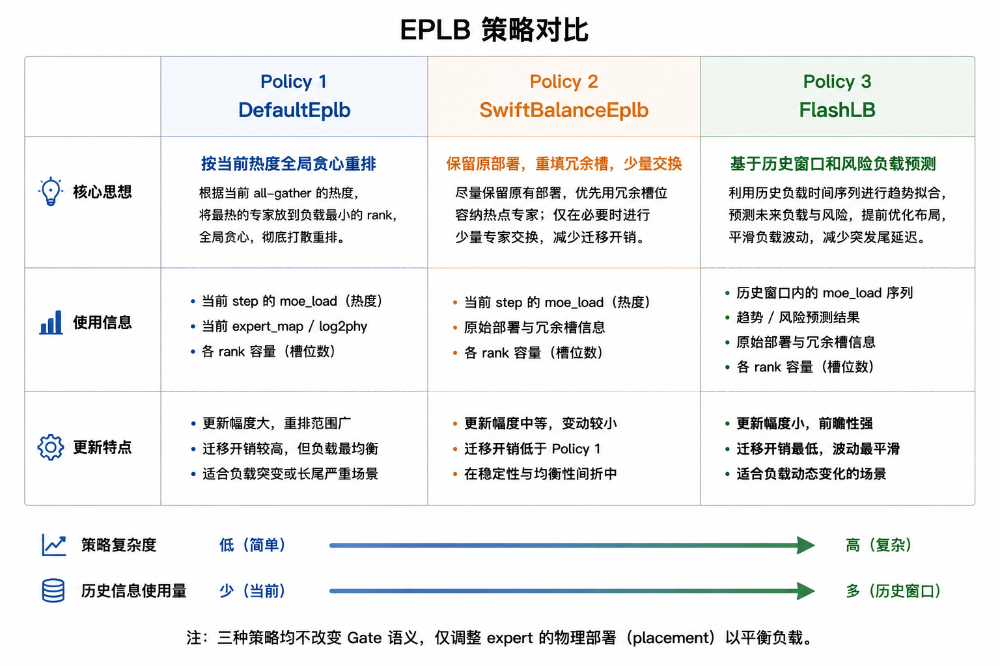
Policy 1：DefaultEplb
- 先把 physical workload 合并成 logical expert 热度
H_e。 - 如果存在冗余 slot，反复给“单副本平均负载最高”的 expert 加副本。
- 按负载从高到低，把 expert 放入当前累计负载最低的合法 rank。
- 没有冗余时仍可重排不同 expert 的 rank 位置，但不能拆分单个热点 expert。
Policy 2：SwiftBalanceEplb
- 先计算当前层 imbalance，低于
1.01可跳过。 - 保留第一次出现的 expert，把后续重复位置视为冗余槽。
- 优先重填冗余槽，再做受限 rank 间交换。
- 只有新 imbalance 更低才接受部署，适合在线动态更新。
Policy 3：FlashLB
- 维护 workload 时间窗口，而不是只看最近一次采样。
- 用均值、方差、协方差估计 expert 风险负载。
- 通过
FlashTree搜索副本数，再用 LPT 思路放置。 - 用匹配算法减少搬迁量，只更新收益为正的 layer。
Policy 1：贪心装箱
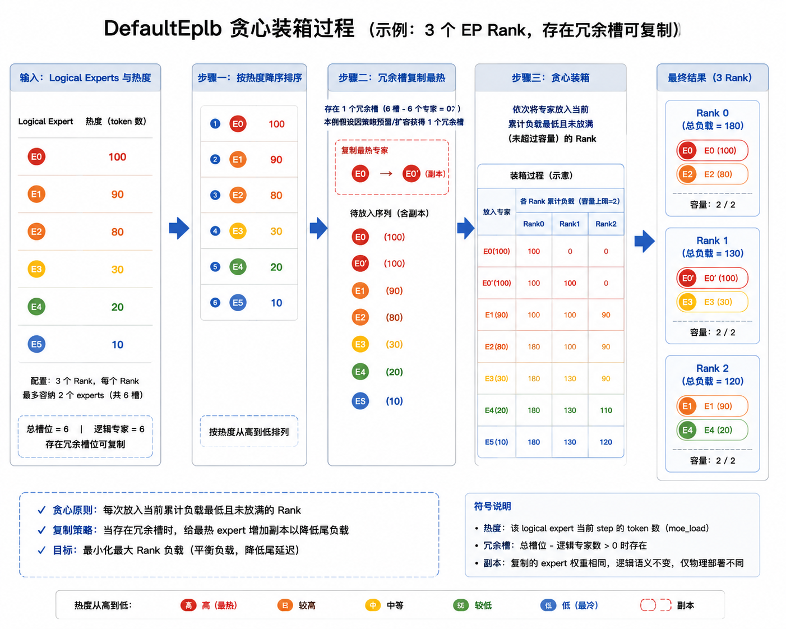
Policy 2：少搬一点，也要变好一点
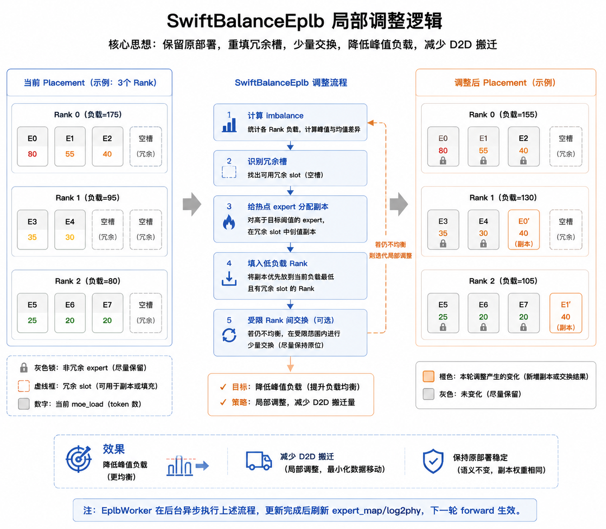
它的副本收益更新是代码启发式：H̃_e ← H̃_e × (a_e + 2)/(a_e + 3)。
这不是理论最优公式，而是用来估计“新增副本后单副本压力下降”。
Policy 3：把历史波动也算进去
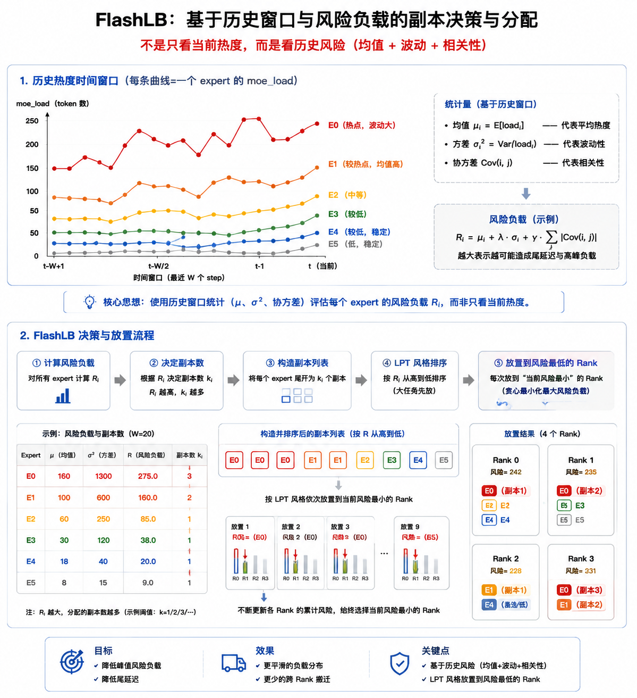
如果两个 experts 的协方差高，说明它们常常一起变热，把它们放到同一 rank 会提高峰值风险。 因此 FlashLB 的 placement 不只是均值装箱，还会避开高相关热点组合。
8. 当前实现的问题与后续设计方向
EPLB 已经形成闭环，但仍有三个工程问题值得持续收敛：MoE 执行路径复杂、EPLB 控制面与上游接口脱节、 以及量化方法对 EPLB 的适配成本随格式数量线性增长。
8.1 MoE 执行路径过深
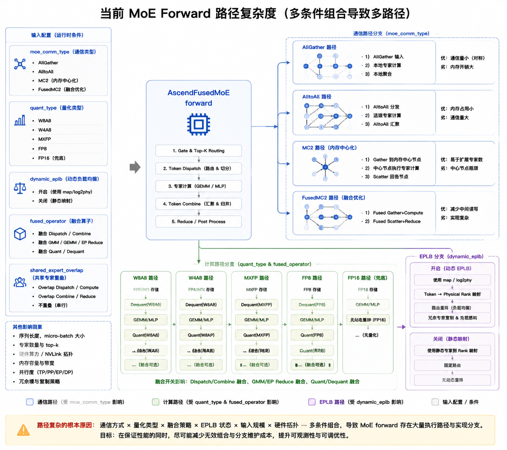
当前 AscendFusedMoE 沿用上游 FusedMoE 接口形态，同时扩展 NPU 执行逻辑。
通信侧有 AllGather、AlltoAll、MC2、FusedMC2；
计算侧又受量化格式、fused operator、dynamic EPLB 等条件影响。后续更合理的方向是把 MoE
前向拆成稳定阶段：route → dispatch → expert_compute → combine → finalize，
再由 capability registry 或 plan builder 选择具体算子组合。
8.2 EPLB 控制面需要标准化
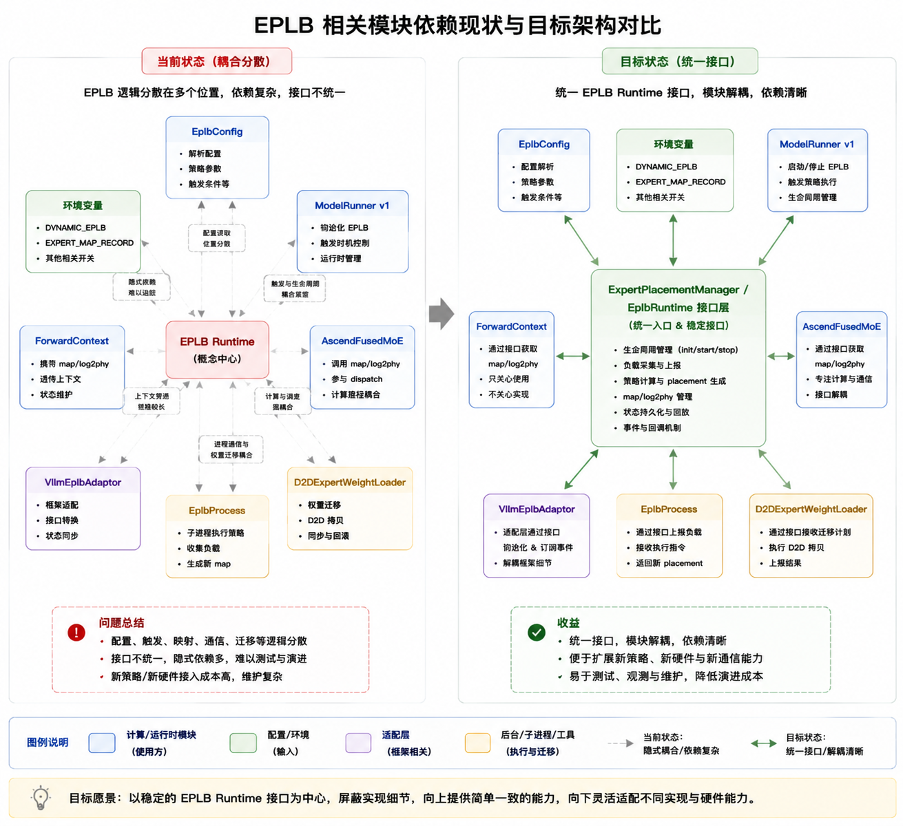
当前 EPLB 逻辑分布在配置、runner、MoE layer、parallel group 和 adaptor 中。配置上也存在多个布尔开关、
路径参数和环境变量组合出的隐式状态。长期看，应定义 ExpertPlacementManager 或
EplbRuntime 这样的稳定接口，让 MoE 层统一暴露 placement、映射、负载统计、权重视图和 map 更新。
模式也应收敛为 off、static_map、record、dynamic 这类互斥状态。
8.3 量化适配需要统一契约
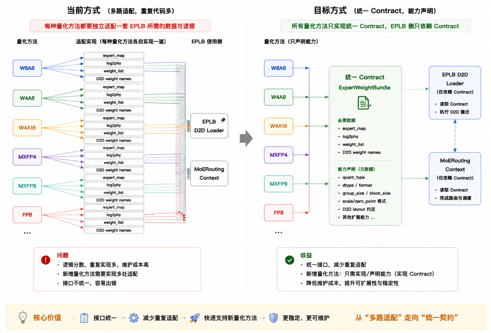
vLLM Ascend 支持 W8A8、W4A8、W4A16、MXFP4、MXFP8、FP8 等 MoE 量化路径。当前每增加一种量化格式，
往往也要补 expert_map、log2phy、冗余专家数、weight list 和 D2D 权重名表。
后续应把这些依赖压缩到统一的 ExpertWeightBundle 与 MoERoutingContext：
前者描述每个 physical expert 的 weight、scale、bias、layout metadata 和可迁移 buffer；
后者在量化无关层完成路由映射，让量化方法专注于 local expert MLP 计算。
| 问题 | 当前风险 | 推荐演进 |
|---|---|---|
| MoE 路径复杂 | 组合分支多，覆盖和定位成本高。 | 阶段化接口 + 执行计划 + 能力注册。 |
| EPLB 控制面分散 | 上游 MoE 重构后多处重新适配。 | 统一 placement runtime，收敛运行模式。 |
| 量化适配重复 | 新增量化方法时 EPLB 代码同步增长。 | ExpertWeightBundle + MoERoutingContext + contract tests。 |